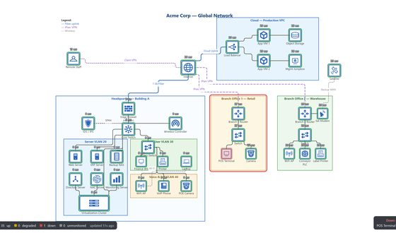

Quickstart: from a device list to a live wall
About ten minutes, start to finish, once the apps are running.
Before you start: this guide assumes the suite is installed and running on
this host - either via the one-shot setup script or each app's own
docker compose up (see the apps for
ports and links). Pick the path that matches where you're starting from;
both end at the same wall.
Path A - you have devices, but no diagram
Let SNMP do the drawing prep for you: monitor first, and a starter diagram falls out of it.
- SNMPCanvas - open Devices and Add (or Bulk add for a subnet's worth at once). Enter each device's address and SNMP credentials - the probe shows what the device offers before anything is saved.
- On each device, check Export for the interfaces and sensors you
want visible on the wall. Every exported value gets a short
{code}token - you'll paste those into the diagram in step 5. (Devices themselves report up/down automatically.) - In Settings → Inventory export, click Export inventory (CrossCanvas CSV). The download lists every monitored device with its address, serial, and a best-guess stencil - routers arrive as routers, switches as switches.
- CrossCanvas - File → Import Inventory, pick the CSV. Your fleet lands on the canvas labeled and icon'd. Lay it out, draw the connections, add zones - make it yours.
- Where you want a live reading on the wall, put its
{code}token in a label or annotation -Rx {Xa3}next to an uplink, for example. Plain text stays plain; tokens become numbers. - Save the diagram as an
.xcanvasfile (any name is fine). - LaunchCanvas - back on the
Launch page, use Wall board → Upload board.
The file lands (as
board.xcanvas) exactly where the kiosk reads it, and the previous board is kept as a one-click backup. - PingCanvas - open the kiosk tile. Devices
colored by reachability, your
{code}tokens showing live readings, refreshing on its own. Put it on the wall TV and enjoy.
Path B - you already have a diagram
- CrossCanvas - File → Import
Diagram brings in Visio (
.vsdx), draw.io, or Gliffy files; stencils are matched to the suite's own icon set. - Give each device you want monitored an IP-Address in its Device Details - that single field is what makes it a monitored device on the wall. Devices without one stay decorative, which is sometimes exactly right.
- Want live readings too, not just up/down? Add the same devices in
SNMPCanvas, check Export on the
values you care about, and put their
{code}tokens into labels or annotations on the diagram. - Continue from step 6 above: save, upload, open the kiosk.
Where you end up

From here, the rest of the suite is one step each:
- AlertCanvas - set thresholds on the exported values (CPU over 90, temperature over 45, device down) and get email, ntfy, or syslog notifications. It watches the same feed the wall does.
- SyslogCanvas - point your devices' syslog and SNMP traps at this host (514/udp and 162/udp) and you have a searchable record of what everything said, for the day the wall shows red.
- Single sign-on - set one shared
SUITE_SECRETacross the suite and logging in here logs you into every app at once (the LaunchCanvas README has the two-line recipe).